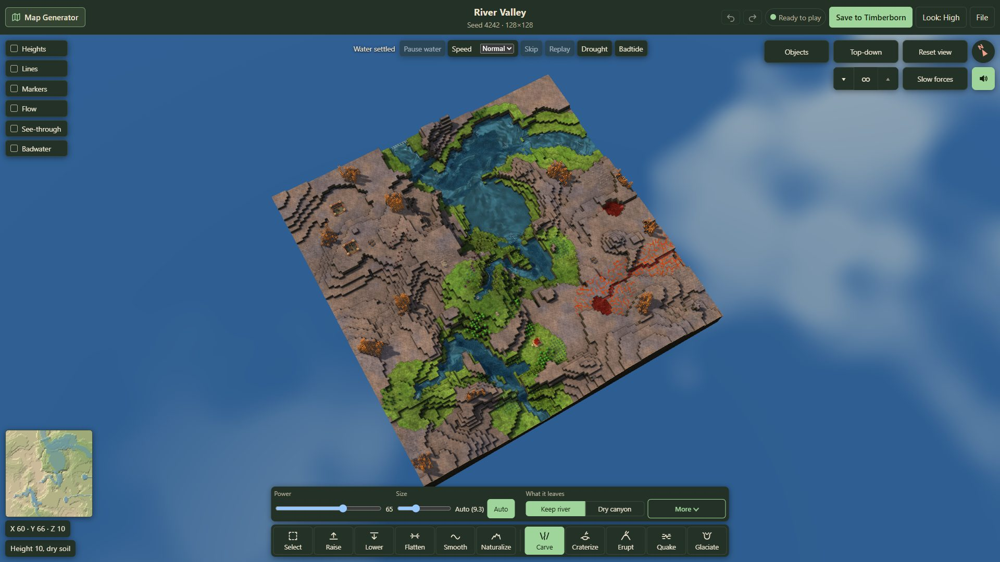
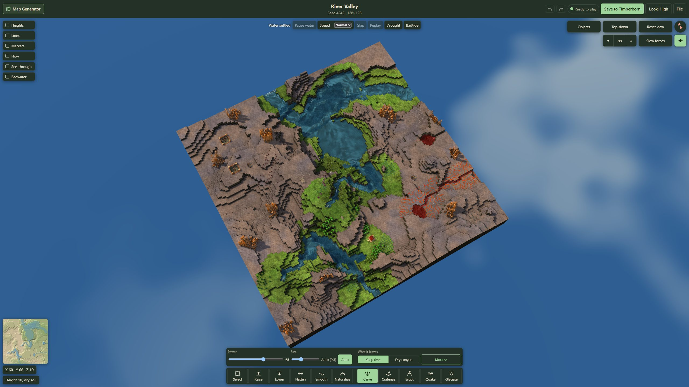
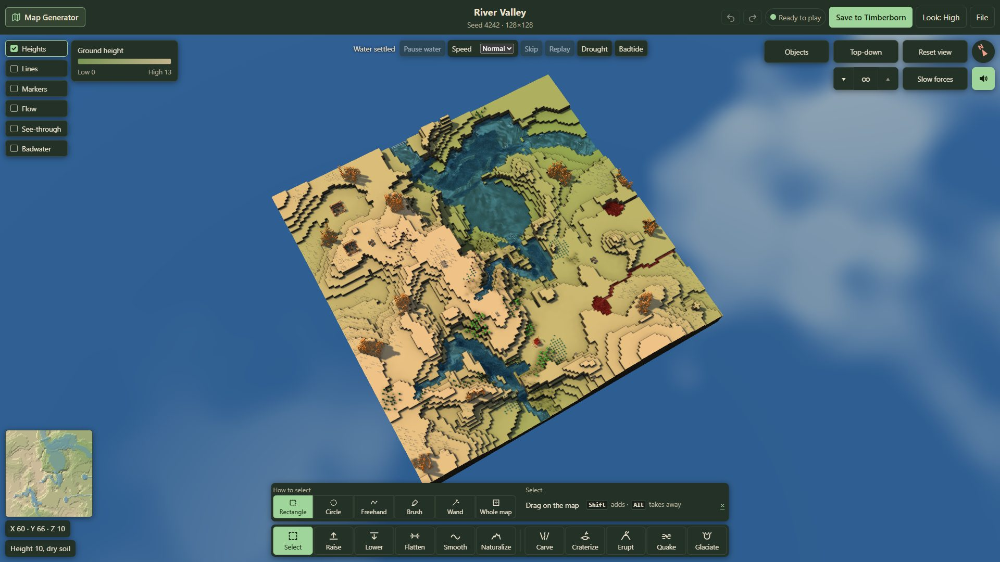
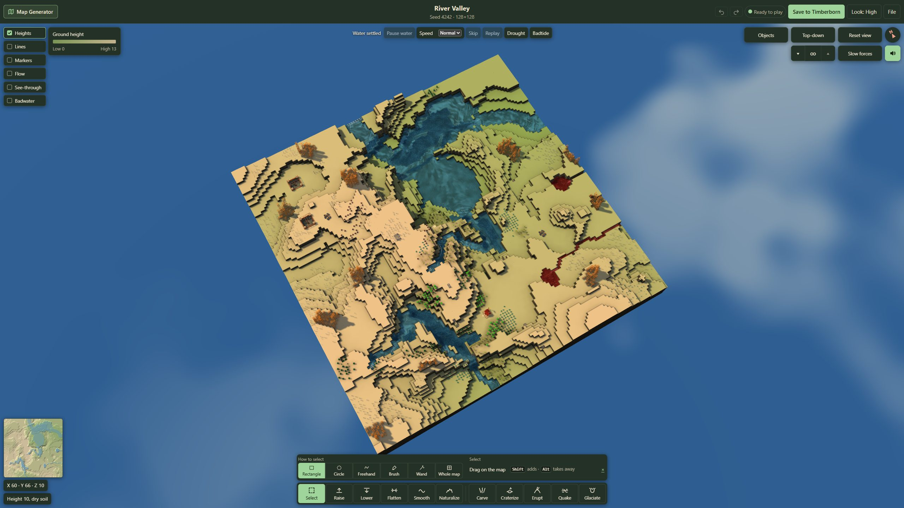
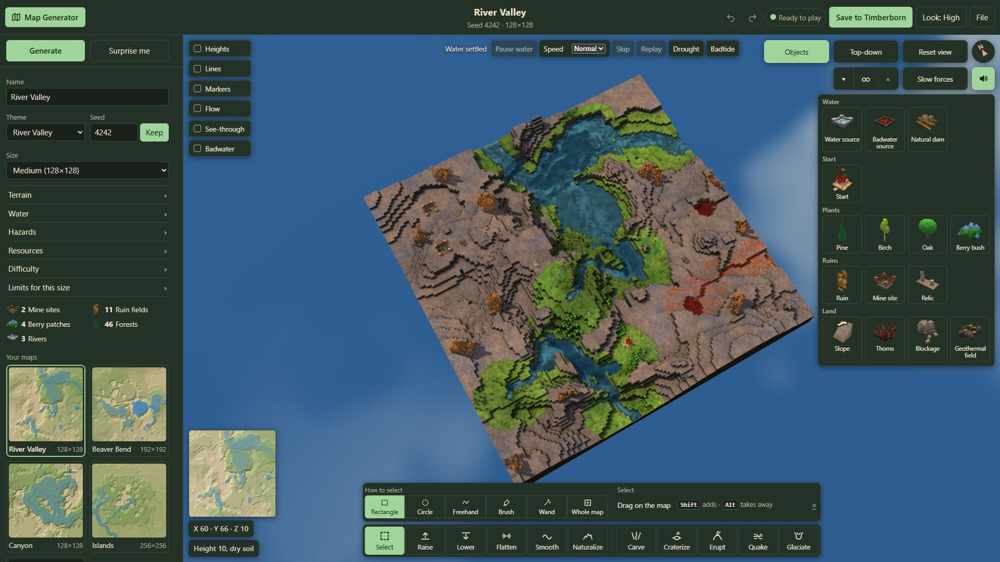
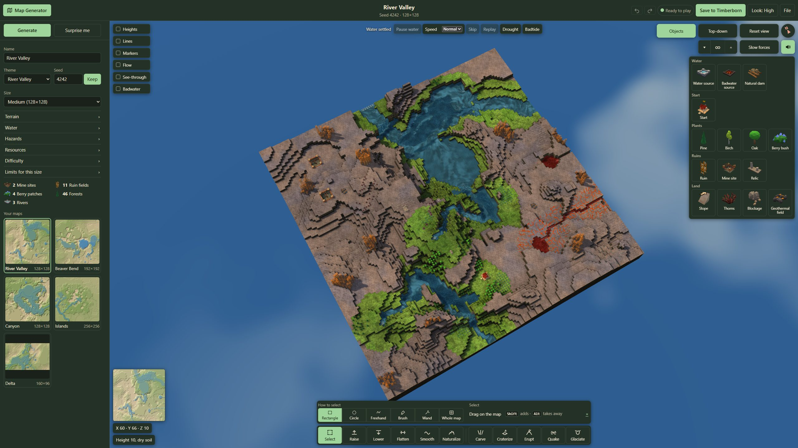

Layout 2 mockups, round 6
River Valley 4242 at 128×128, the High look, at 1920×1080 and 2560×1440: the design to build. The Map Generator button opens the 352px map generation panel (Name under Generate, the counts under the sections, Your maps as whole pictures two to a row). On the map: the Show toggles as a column of checkbox rows at the top left; the water controls in one row at the top middle; the camera group, the height slice, Slow forces, the sound and the Objects button at the top right, the objects grid opening under them; the minimap, the coordinates and the readout at the bottom left; one bar at the bottom middle with the held tool's settings above it on the bar's cells. Click a picture for full size. What doesn't fit is listed in DESIGN.md, "Layout 2 mockups".
1. The panel open, Select in hand


2. The panel closed, Carve picked




3. Raise picked: its settings on the bar's cells


4. Heights ticked, with its legend




5. The Objects grid open



